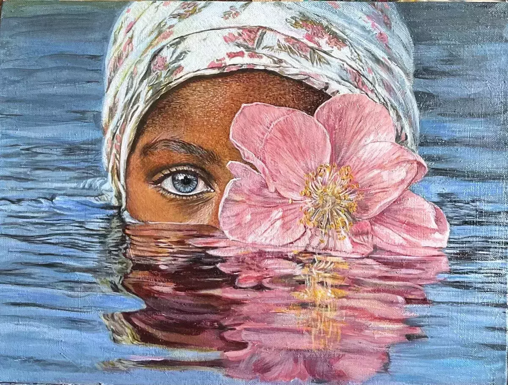

Глубокий, эмоциональный образ, совмещающий элементы реализма и символизма
30х40 см.
30х40 см, холст на ДВП, акрил, лак. Стиль гиперреализм.
На картине изображен глубокий, эмоциональный образ, совмещающий элементы реализма и символизма. Картина показывает единение живой природы и человеческой души. Хрупкость цветка, плывущего по воде, сопоставляется с уязвимостью человека, чья жизнь так же тонка и прекрасна, как нежный розовый лепесток. Цветок «оживает», получая человеческие черты (кожу, взгляд), а человек уподобляется прекрасному растению, расцветшему прямо посреди водной глади. Цветок здесь олицетворяет живые, расцветающие внутри человека эмоции, чувства мысли.